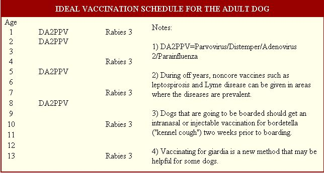
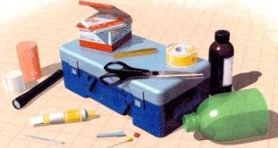

Keeping your adult dog healthy and spry
I had no choice but to grab the remote control and stop the attack. Watching movies like Steven King's Cujo is just one of the twisted ways that overtaxed veterinarians like myself entertain themselves between buzzes of the pager. Why bother sleeping if you're going to be jolted back to work at any minute anyway?
I've experienced many memorable farm calls about country dogs over the years - although none involved a rabid Saint Bernard - and I have noticed that many problems can be prevented. This article, as a follow-up to last issue's article on the care of puppies, is a primer on the prevention and treatment of recurring health problems of the adult dog. Once your dog grows to about 1 to 2 years of age, there is no reason he or she cannot live a healthy, happy life.
PERFORMING CPR
3. Feel for a heartbeat over thechest, or for a pulse in the femoral artery on the inside of the upper back leg (practice feeling for the pulse).
4. Apply vigorous chest compressions to the left side of your dog's chest, one per second, while someone feels for a pulse. Continue until medical help is available.
1. If your dog is not breathing, look in its mouth to make sure nothing is blocking the airway.
2. Place half a plastic pop bottle (see " Creating a Pet First Aid Kit ") snugly over your dog's nose and give one breath per second into the bottle.
Fence the Yard
Farm dogs that run free get into trouble. They can get run over, shot at, cut up by neighboring fences or attacked by other dogs. Smaller pooches such as Yorkies even make desirable prey for coyotes, raptors and mountain lions.
That's why tunnel-proof perimeter fencing or the more high-tech, underground invisible fence is needed around your homestead. Invisible fencing works by giving your dog a small jolt of electrical current via an electronic collar if he tries to cross a buried wire. All but the , most stubborn dogs will respect it. Unfortunately, those bull-headed beasts that are willing to take a shock to go after a rabbit find themselves outside the perimeter, having to take another shock to get back inside. These guys need the real thing.
Adult dogs are susceptible to internal parasites, especially on the farm. A smorgasbord of worms abound in the average pasture, and your canine will feast on these at every opportunity. Manure, afterbirths and dead animal carcasses seem like highly desirable delicacies to even the most discriminating dogs.
A regular deworming for roundworms, hookworms and tapeworms should be given to any manure- or carcass-loving pooch every three to six months. Use effective combination products such as Drontal(restricted) (by prescription only), and remember that most roundworm/hookworm medications such as Panacur(restricted) and Strongid(restricted) will not treat tapeworms.
As with puppies, it's much easier to prevent flea and tick infestations than it is to treat them. Ticks carry infectious diseases such as Rocky Mountain tick fever, Lyme disease and ehrlichiosis, all of which can be ransmitted to people. Fleas will enthusiastically feast on your dog's blood, causing an allergic reaction - or hypersensitivity - to their saliva.
Flea bite allergies cause an intense itchiness that will drive your pet crazy (and you, too, if you listen to the scratching all night). To eliminate fleas and ticks, have your veterinarian prescribe powerful skin ointments such as the easy-to-ap ply Frontline(restricted) or Advantage(restricted).
Imagine a slithering, entwined mass of white, spaghetti-like worms luxuriating in a Jacuzzi of blood in your dog's heart. Heartworms are spread by mosquitoes and initially live in the bloodstream as microscopic parasites. They embark on a migration to the heart as they mature, wreaking havoc with the cardiovascular system. You can easily and completely prevent heartworm disease by giving your dog a monthly, chewable medication.
Any dog living with mosquitoes should be on a heartworm prevention program year-round, since the program also provides protection against roundworms and hookworms. A simple blood test should be performed every 2-3 years to confirm heartworm-free status, especially in areas with high numbers of mosquitoes.
Dogs over 8-10 years of age that have been vaccinated regularly may not require annual vaccinations for parvovirus/distemper/adenovirus 2/parainfluenza, despite the manufacturer's label recommendation to do so. In fact, many veterinarians are vaccinating older dogs only two to three years, if at all. Rabies vaccinat ions, however,should be kept current with legal requirements (most call for shots from once a year to once every three years).
Continued annual vaccination for giardia, Lyme disease and leptospirosis should be given in areas where the diseases are prevalent. Be aware that there are potential side effects to vaccination, especially in older dogs, which include allergic reactions and disorders of the immune system. Immune-mediated hemolytic anemia, for example, is a life-threatening disease in which the immune system destroys the body's own red blood cells. Some veterinarians suspect it is trig gered by vaccinations in older dogs that have been "sensitized" to a particular vaccine. My recommendation is to vaccinate adult dogs every three years, with each vaccine on a rotating schedule (see the vaccination schedule above).
CREATING A PET FIRST AID KIT
•Bandage material, consisting of telfa pads, cast padding, elastic wrap and white medical tape
•Rectal thermometer
•Antibiotic ointment
•Plastic pop bottle cut in half (for CPR)
•An 18-gauge, 1 1/2" needle (for relieving bloat)
•Penlight
•Hydrogen peroxide
•Tweezers
•Scissors
Controversy continues among veterinarians about the best diet for dogs. In general, the quality of grocery-store brands is closing the gap with premium brands such as Hills (restricted) and Eukaneuba(restricted). The main difference between grocerystore brands and premium brands is that premium brands are field - tested with dogs and use higher-quality bulk ingredients. I have seen plenty of dogs, however, that eat the cheapest discount-store dog food available and live - disease-free - to a respectable old age.
Nevertheless, even the best diet can be sabotaged with table scraps and highcalorie dog treats. Supplement your dog's diet with low-calorie abrasive treats such as Milkbones° and keep in mind that a dry diet will generally keep the teeth in better shape. Vitamins are usually not needed as a supplement when a highquality food is offered.
Be mindful of the kind of table scraps you feed your dog - especially those high in fat - because they can trigger a bout of pancreatitis. On a recent farm call, I found an elderly, obese dog collapsed in the yard and unable to stand. She was regularly fed leftover pork chop bones, and blood tests revealed pancreatitis. In this condition, the pancreas becomes inflamed and actually starts to digest itself with its powerful enzymes. Despite intravenous fluids and antibiotics, the dog died within several days. This is an unfortunately common tale.
Excessive barking, chasing livestock and wildlife, killing chickens and chasing trucks are not qualities that endear farm dogs to their owners or neighbors. Moreover, these behaviors are far more life-threatening than many medical diseases.
Unfortunately, many behavioral problems are so genetically ingrained that no amount of behavior modification will help. Other problems like house-soiling, destructive behavior (due to separation anxiety) and some kinds of aggression and excessive barking can be improved with a combination of behavior modifi cation and some newer medications. (Yes, Prozac might help your dog.)
The single best source of information about tackling behavior problems in dogs is an easy-to-understand book by Nicholas Dodman, a veterinary behaviorist, called The Dog Who Loved Too Much: Tales, Treatments and the Psychology of Dogs (Bantam Books, 1997).
Dogs love D-Con(restricted) rodent poison, so leave the mouse-killing to your cats. If dogs eat it, you may not notice anything until three of four days later when they start to bleed uncontrollably.
Spilled antifreeze is also sweet-tasting and highly toxic, so be sure to clean up and secure any overflows, oil spills or store-bought chemicals to prevent other poisonings. Interestingly, old sheds are ready sources of skin parasites like mites, lice, ticks and poisonous spiders, and some dogs will chew lead paint off older buildings and sheds.
Moldy food in composts can cause seizures in dogs, and some species of mushrooms thrive at certain times of the year but will make your dog deathly ill. Also, exposed metal lawn edging, fencing wire and old lumber with nails are notorious for slicing up footpads, so cover sharp edging with a plastic cap. In general, keep the yard cleaned up to avoid chronic infections with roundworms and hookworms (remember, livestock manure is teeming with parasites).
Some dogs will eat anything they find. Human medications dropped on the floor, chocolate cakes, pennies, baby toys and Christmas ornaments can cause intestinal obstruction, zinc toxicity or ibuprofen toxicity, to name a few.
If your pooch is the type with an oral obsession, keep things picked up. If your dog starts acting sick about the same time that something turns up missing, you may have a problem.
WHEN TO CALL THE VET
depending on the size of the dog. Sometimes you can feel the heartbeat by feeling directly over the lower left side of the chest.
3. Count the breathing per minute, which should be from 25 to 60 breaths per minute (if your dog is panting, disregard).
4. Check the gums. They should be pink and moist. If they are pale, gray or sticky, there could be a serious problem.
5. Check skin turgor by pulling up the hair coat on the back of the neck. The skin should snap briskly back into place. If it doesn't, that could be a sign of dehydration.
6. Shine a light into your dog's eyes. Both pupils should initially constrict, then dilate when the light is diverted. A lack of pupil responsiveness is a grave sign.
Use common sense. If your dog is throwing up, has diarrhea or is coughing, but is bouncing off the walls and wagging his tail normally, he will probably get better on his own. If he seems down and out, lethargic and is not eating, you'd better get on the phone. Get your dog's vital signs for more objective information:
1. Take the temperature rectally (using a dedicated thermometer!. Normal body temperature is from 99°F to 102°F
2. Get the heart rate by feeling the pulse in the femoral artery, which runs down the inside of the back leg. Normal heart rates for dogs run from 80 to 150 beats per minute,
The Jack Russell Terrier struggled to get on his master's bed, but unforgiving arthri tis of the hips had made it impossible. He gamely tried repeatedly, until he was given the needed lift. His gray whiskers bristled as he settled onto the bed to loyally wait for his master, who was never to see him again. I had to look away from the movie screen - this was more sadness than I could handle in one day.
Although not all dogs will live as interesting a life as the terrier in the movie My Dog Skip, most will deal with many of the same geriatric problems. Arthritis is a given in most dogs, and can be severe in some large breeds. "Nutraceuticals" such as glucosamine and chondroitin sulfate are safe and effective treatments for milder cases, but powerful prescription products such as Rimadyl(restricted) are true wonder drugs. Although pricey, these drugs can make an old dog young again.
Some dogs may have bouts of disorientation, incontinence and confusion. Cognitive Dysfunction Syndrome is the medical term given to the canine version of Alzheimer's, and a new drug on the market called Anipryl(restricted) may help. Made by Pfizer, Anipryl has worked (to some extent) in about 75% of dogs with this problem. Most dogs can live with this condition as long as their owners are willing to tolerate an occasional mess and some disorientation. But when a dog doesn't recognize or respond to its master, there is no human-animal bond to sustain the relationship. Which brings us to the last but certainly not least issue when caring for an adult dog: There will come a time when we have to say goodbye.
While certainly a tough decision by any standard, most owners seem to know the appropriate time to make it. When the quality of life has deteriorated to the point where there is very little left, it is time for euthanasia. Have your veterinarian come to the house so your loyal buddy can "go to the other side" while lying in his favorite spot, surrounded by family members. The intravenous solution will offer a painless and instant death. Stroke and talk to your dog while the solution is administered.
My pager buzzed again heartlessly. This time I had stopped by the head office to answer another call of nature, and as I pulled the pager off my belt to better see the message, the nagging little device - to my horror - slipped out of my hand and splashed resoundingly into the toilet bowl. Eerily, I could read the magnified message "Dog Sick" with the corresponding phone number as the pager settled to the bottom of the bowl.
Frozen with indecision, I started to reach into the bowl to retrieve the pager and then thought better of it. What would happen, I evilly wondered, if I just slowly pushed down the flush lever on the back of the toilet? I became hypnotized as I watched the slowly spinning vortex of water suck my messages into its whirling center.
Read more about animal care on www.motherearthnews.com and sample our best archived articles, bulletin boards and much more!
Related info:
First Aid on the Farm
|
|
|
|
|
 |
 |
|